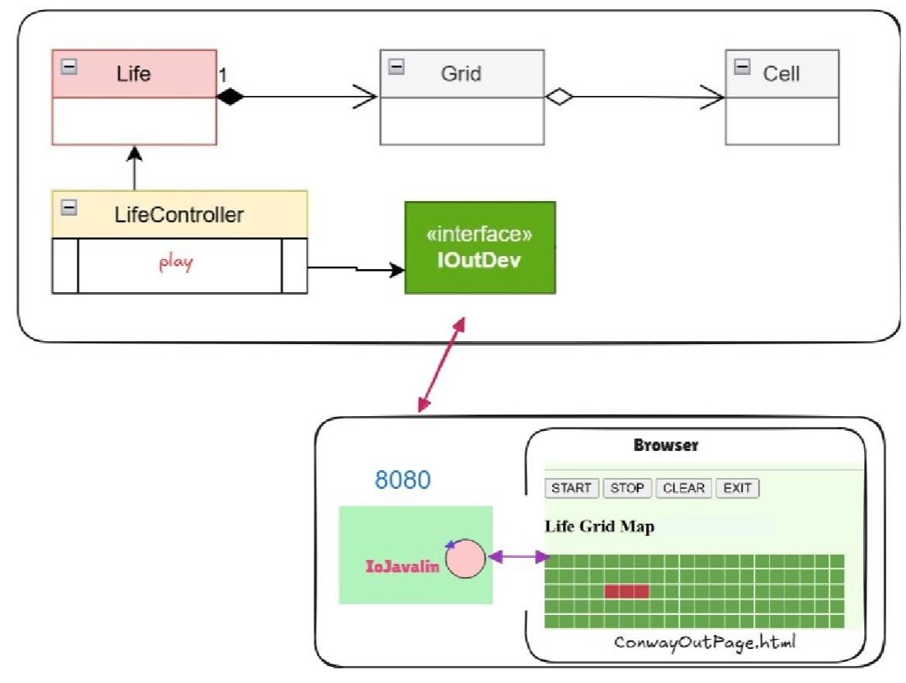

Per le classi ed i test della logica core del gioco Life, si fa riferimento allo Sprint 2.
L'interfaccia di Input/Output con il browser è la seguente:
public interface IOutDev {
public void display(String msg); // For HMI
public void displayCell(IGrid grid, int x, int y);
public void close();
public void displayGrid(IGrid grid);
}

Per soddisfare il requisito di isolamento e portabilità (R6), l'intero ecosistema è configurato per il rilascio tramite container.
Passi di esecuzione:
docker build -t conway-web-gui:1.0 .
docker run -p 8080:8080 --rm conway-web-gui:1.0
La scomposizione tra View, Server di Routing e Motore di Calcolo garantisce una altissima manutenibilità. Sostituire l'interfaccia HTML con un'App Mobile o sostituire Javalin con Spring Boot non richiederà la ricompilazione del Core matematico del gioco.